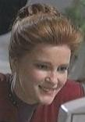
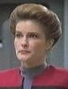
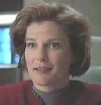

Quante volte Janeway ha cambiato pettinatura? |
Queste sono le varie pettinature che ha avuto Kathryn Janeway.
| Pettinatura pensata all'inizio della produzione, poi abbandonata in favore della crocchia. |
 |
| Caretaker, lo standard per le prime due stagioni e mezza. |  |
| In Time and Again ha i capelli sciolti. |
 |
In Ex Post Facto la crocchia è meno tirata. |
 |
| In Heroes and Demons e Cathexis torna la crocchia tirata, ma con i capelli sulla fronte girati a destra e non tutti indietro. |
 |
| In The 37's l'acconciatura è più morbida. |
 |
| Solamente in Parturition porta i capelli corti. | |
| In Resolutions porta i capelli lunghi raccolti da un fermaglio. |
 |
| A partire da Future's End - Part I porta i capelli lunghi raccolti da un fermaglio. |
 |
| A partire da Year of Hell - Part I i capelli sono più corti. |
 |
| In Random Thoughts la pettinatura è leggermente diversa. |  |
| In The Omega Directive i capelli sono sempre corti, ma stirati. | |
| Versione ricostruita dai Kyrian in Living Witness. |
 |
| In Dark Frontier i capelli sono cresciuti di nuovo. |
 |
| In The Voyager Conspiracy ha tagliato un pochino i capelli. |
 |
| In Workforce ha i capelli lunghi con una piega mai vista in precedenza. |
 |
| In Nemesis ritorna la crocchia. | |
| In Endgame vediamo un futuro alternativo con i capelli bianchi. |